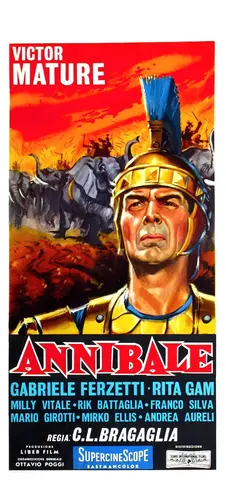
18 film · 348 tracce e varianti · 189 anteprime · 120 video YouTube
Toccare una locandina o Apri brani per la scheda completa. La lente cerca anche i titoli delle musiche.
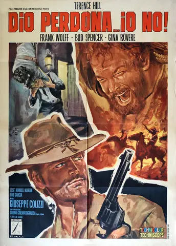
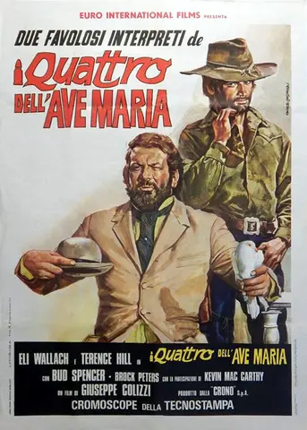
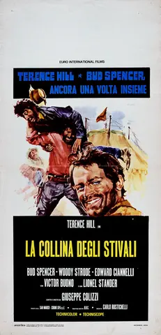
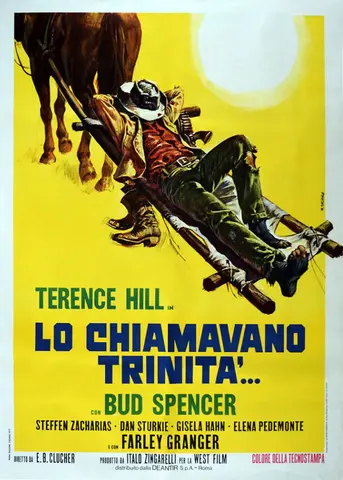
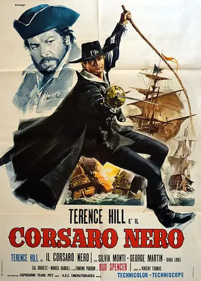
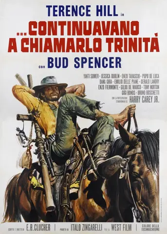
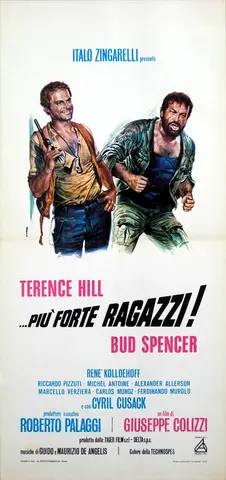
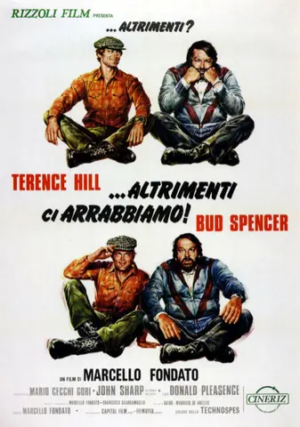
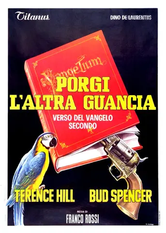
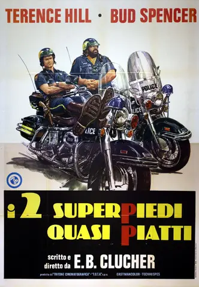
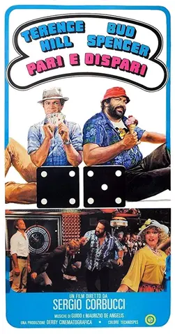
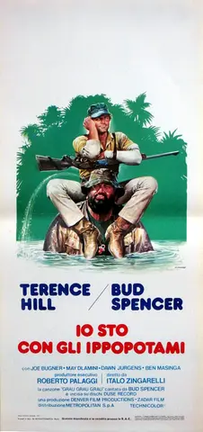
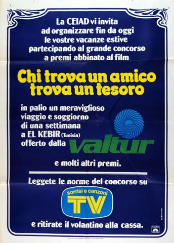
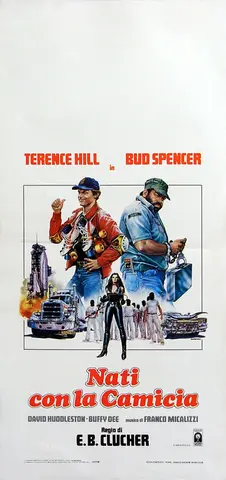
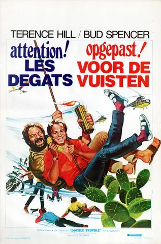
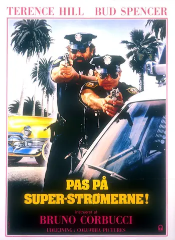
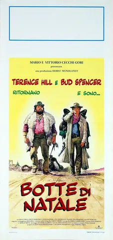
Nessun film corrisponde alla ricerca.
Copertura della raccolta
Come leggere il catalogo. Gli elenchi documentano le edizioni indicate delle colonne sonore e i brani identificati nelle fonti. Un album può includere versioni alternative o brani non montati: non è certificata la presenza nel film di ciascuna traccia . Per i quattro film con elenco parziale, le lacune sono indicate nella scheda. «Annibale» è incluso perché entrambi sono nel cast. Aprire una locandina o il pulsante Apri brani per la scheda completa.
39 tracce non hanno un ascolto diretto identificato e rimangono collegate a ricerche esplicite.
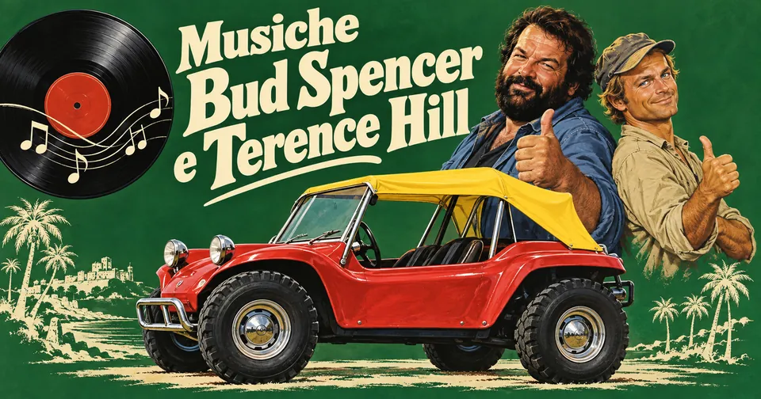
Fonti e limiti della raccolta
Filmografia confrontata con il sito ufficiale di Bud Spencer e con la Spencer/Hill Banca Dati. Crediti e liste delle tracce provengono dalle edizioni discografiche, dai siti ufficiali degli artisti, da Beat Records e Digitmovies; i riferimenti specifici sono nella scheda di ogni film. Le locandine provengono dalla Spencer/Hill Banca Dati, con la scheda dell’edizione e il Paese indicati sotto ogni immagine. I diritti delle immagini restano ai rispettivi titolari.
I collegamenti YouTube sono stati cercati per brano, film e compositore e controllati attraverso titoli e metadati pubblici. Sono preferiti canali degli artisti, ufficiali o Topic quando disponibili; altri video sono caricamenti di terzi. «Stesso tema · variante non confermata» indica che l’ascolto non certifica il take elencato. «Cerca su YouTube» apre una ricerca effettuata ma ancora senza video identificato: non è un ascolto verificato. Non sono stati inventati timestamp.
Le anteprime sono collegamenti remoti forniti dal catalogo Apple Music. Nessun audio è incluso o scaricato nella pagina. Serve Internet per gli ascolti; i contenuti possono cambiare o essere limitati per Paese. Se l’anteprima non parte, apri il collegamento al servizio. Per avere un elenco realmente esaustivo di ogni musica usata, occorrerebbe confrontare i cue sheet o analizzare integralmente una precisa versione di ciascun film.
Verifica delle fonti: . Per «Lo chiamavano Trinità…» è usata la selezione classica ampliata di 25 tracce; non sono duplicati gli editing del disco in ordine film. Sono esclusi bonus esplicitamente non usati di «Annibale» e la sessione di registrazione di «I quattro dell’Ave Maria». La versione cantata «Call the Police», assente dal film «Miami Supercops», è esclusa.
Fonti e riferimenti
- Bud Spencer — filmografia ufficiale del duoConsultata il 3 ottobre 2026.
- Spencer/Hill Banca Dati — filmografia con entrambiConsultata il 3 ottobre 2026.
- Scheda del film e creditiConsultata il 3 ottobre 2026.
- Edizione e lista delle tracceConsultata il 3 ottobre 2026.
- Edizione digitale e ascoltiConsultata il 3 ottobre 2026.
- Locandina — AnnibaleConsultata il 3 ottobre 2026.
- Scheda del film e creditiConsultata il 3 ottobre 2026.
- Edizione e lista delle tracceConsultata il 3 ottobre 2026.
- Edizione digitale e ascoltiConsultata il 3 ottobre 2026.
- Locandina — Dio perdona... io no!Consultata il 3 ottobre 2026.
- Scheda del film e creditiConsultata il 3 ottobre 2026.
- Edizione e lista delle tracceConsultata il 3 ottobre 2026.
- Edizione digitale e ascoltiConsultata il 3 ottobre 2026.
- Locandina — I quattro dell’Ave MariaConsultata il 3 ottobre 2026.
- Scheda del film e creditiConsultata il 3 ottobre 2026.
- Edizione e lista delle tracceConsultata il 3 ottobre 2026.
- Edizione digitale e ascoltiConsultata il 3 ottobre 2026.
- Locandina — La collina degli stivaliConsultata il 3 ottobre 2026.
- Scheda del film e creditiConsultata il 3 ottobre 2026.
- Edizione e lista delle tracceConsultata il 3 ottobre 2026.
- Locandina — Lo chiamavano Trinità...Consultata il 3 ottobre 2026.
- Scheda del film e creditiConsultata il 3 ottobre 2026.
- Edizione e lista delle tracceConsultata il 3 ottobre 2026.
- Digitmovies — edizione 1971, Gino PeguriConsultata il 3 ottobre 2026.
- Locandina — Il corsaro neroConsultata il 3 ottobre 2026.
- Scheda del film e creditiConsultata il 3 ottobre 2026.
- Edizione e lista delle tracceConsultata il 3 ottobre 2026.
- Locandina — ...continuavano a chiamarlo TrinitàConsultata il 3 ottobre 2026.
- Scheda del film e creditiConsultata il 3 ottobre 2026.
- Edizione e lista delle tracceConsultata il 3 ottobre 2026.
- Locandina — ...più forte ragazzi!Consultata il 3 ottobre 2026.
- Scheda del film e creditiConsultata il 3 ottobre 2026.
- Edizione e lista delle tracceConsultata il 3 ottobre 2026.
- Edizione digitale e ascoltiConsultata il 3 ottobre 2026.
- Locandina — ...altrimenti ci arrabbiamo!Consultata il 3 ottobre 2026.
- Scheda del film e creditiConsultata il 3 ottobre 2026.
- Edizione e lista delle tracceConsultata il 3 ottobre 2026.
- Locandina — Porgi l’altra guanciaConsultata il 3 ottobre 2026.
- Scheda del film e creditiConsultata il 3 ottobre 2026.
- Scheda brano: Angels and BeansConsultata il 3 ottobre 2026.
- Scheda brano: Why Is Everyone So MadConsultata il 3 ottobre 2026.
- Locandina — I due superpiedi quasi piattiConsultata il 3 ottobre 2026.
- Scheda del film e creditiConsultata il 3 ottobre 2026.
- Scheda brano: Brotherly LoveConsultata il 3 ottobre 2026.
- Scheda brano: Miss RobotConsultata il 3 ottobre 2026.
- Scheda brano: SwitchConsultata il 3 ottobre 2026.
- Scheda brano: The Man on the BoatConsultata il 3 ottobre 2026.
- Scheda brano: White Yellow and BlackConsultata il 3 ottobre 2026.
- Scheda brano: SongConsultata il 3 ottobre 2026.
- Locandina — Pari e dispariConsultata il 3 ottobre 2026.
- Scheda del film e creditiConsultata il 3 ottobre 2026.
- Edizione e lista delle tracceConsultata il 3 ottobre 2026.
- Edizione digitale e ascoltiConsultata il 3 ottobre 2026.
- Locandina — Io sto con gli ippopotamiConsultata il 3 ottobre 2026.
- Scheda del film e creditiConsultata il 3 ottobre 2026.
- Scheda brano: Movin’ Cruisin’Consultata il 3 ottobre 2026.
- Scheda brano: SunshineConsultata il 3 ottobre 2026.
- Scheda brano: CaféConsultata il 3 ottobre 2026.
- Scheda brano: Where Do the Children PlayConsultata il 3 ottobre 2026.
- Locandina — Chi trova un amico trova un tesoroConsultata il 3 ottobre 2026.
- Scheda del film e creditiConsultata il 3 ottobre 2026.
- Edizione e lista delle tracceConsultata il 3 ottobre 2026.
- Beat Records — colonna sonora ampliataConsultata il 3 ottobre 2026.
- Locandina — Nati con la camiciaConsultata il 3 ottobre 2026.
- Scheda del film e creditiConsultata il 3 ottobre 2026.
- Edizione e lista delle tracceConsultata il 3 ottobre 2026.
- Beat Records — colonna sonora ampliataConsultata il 3 ottobre 2026.
- Locandina — Non c’è due senza quattroConsultata il 3 ottobre 2026.
- Scheda del film e creditiConsultata il 3 ottobre 2026.
- Scheda brano: Miami Supercops (Instrumental) [Main Theme]Consultata il 3 ottobre 2026.
- Scheda brano: MoviesConsultata il 3 ottobre 2026.
- Locandina — Miami Supercops – I poliziotti dell’8ª stradaConsultata il 3 ottobre 2026.
- Scheda del film e creditiConsultata il 3 ottobre 2026.
- Edizione e lista delle tracceConsultata il 3 ottobre 2026.
- Terence Hill — colonna sonora ufficialeConsultata il 3 ottobre 2026.
- Locandina — Botte di NataleConsultata il 3 ottobre 2026.